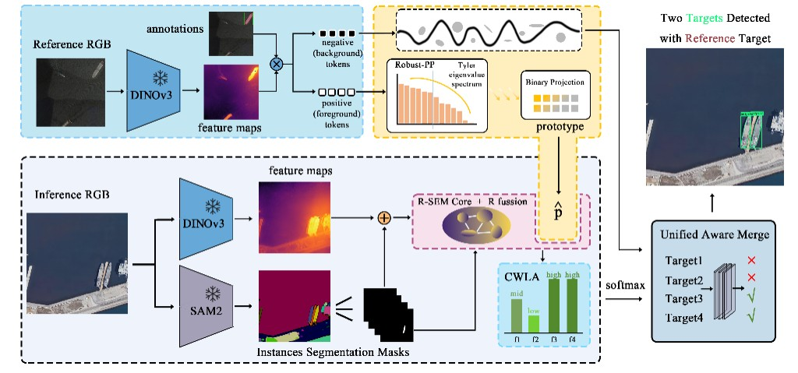
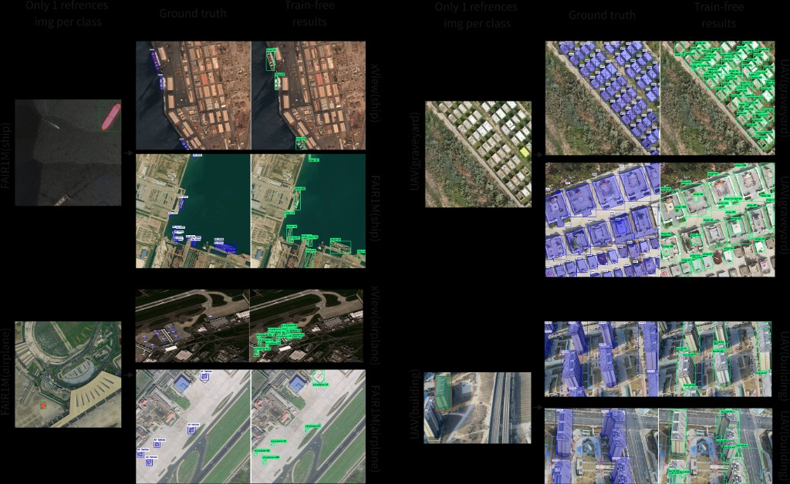
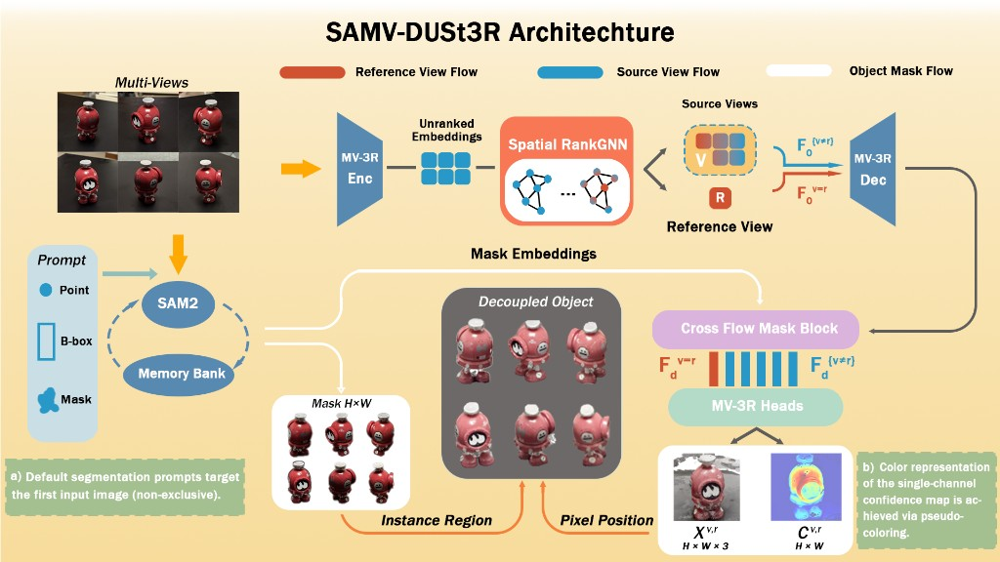
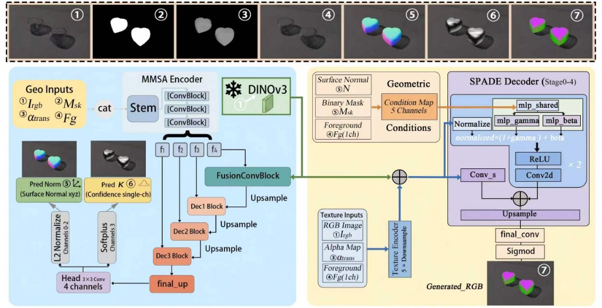
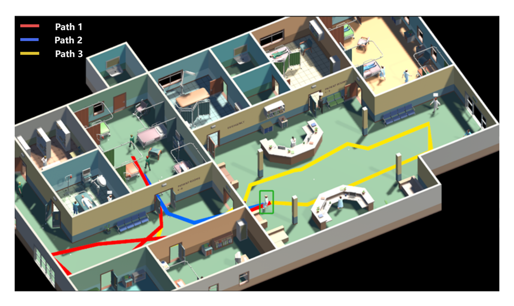

About · 关于我
Building intelligent 3D worlds from language & vision.
Hello, my name is Zuan Gu (Zaun). I am a Ph.D. candidate in Software Engineering at Northeastern University and team leader of the Digital Twin Research Group at the Pan-Virtual Reality Talent Cultivation and Technological Innovation Center.
研究方向聚焦于计算机图形学与AI 驱动的三维内容生成，涵盖文本到 3D 场景、多视图几何解耦、遥感零样本感知等方向。
学术成果
Conference & Journal · 会议论文优先
会议论文 Conference Papers
-
ZODS-RS — Zero-training Oriented Detection & Segmentation for Remote Sensing

方法框架 · Reference prototype & inference pipeline 
实验结果 · Train-free detection across datasets -
SAMV-DUSt3R: Instance-Centric 3D Scene Decoupling from Sparse Multi-Views

方法框架 · SAMV-DUSt3R Architecture -
GHOST: Geometry-Guided Hallucination of Opaque Surface Textures

方法框架 · Geometry-guided texture hallucination pipeline
期刊论文 Journal Papers
-
Text-to-Hierarchical 3D Scene Generation: A New Approach for Layered 3D Modeling from Natural Language
SCI JCR Q1 -
Text-to-3D scene generation framework: bridging textual descriptions to high-fidelity 3D scenes
SCI JCR Q1演示 · Text-to-3D 场景生成 -
Research of Crowd Behavior Simulation Methods Based on Relationships and Emotional Evolution
SCI JCR Q1
演示 · 关系与情感演化驱动的人群行为仿真
经历
Experience · Highlights
参与中央高校基本科研业务费专项资金项目（交叉集成与协同发展），主持/参与企业横向项目 30+ 项。
申请国家发明专利 2 项。
作为核心成员获国家级科技竞赛奖项 3 项、省级 3 项。
联系
Open to collaboration
欢迎就三维生成、数字孪生、遥感感知等方向交流合作。